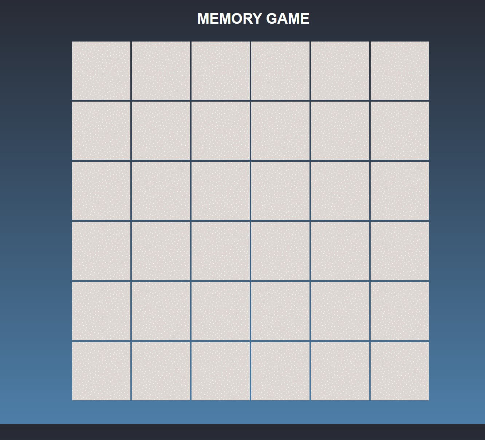
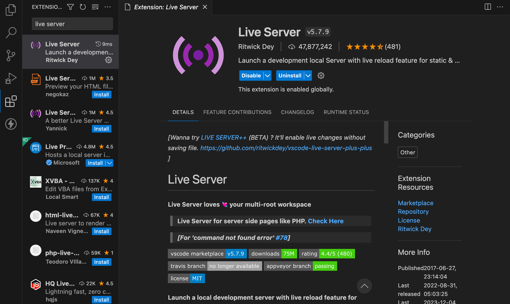
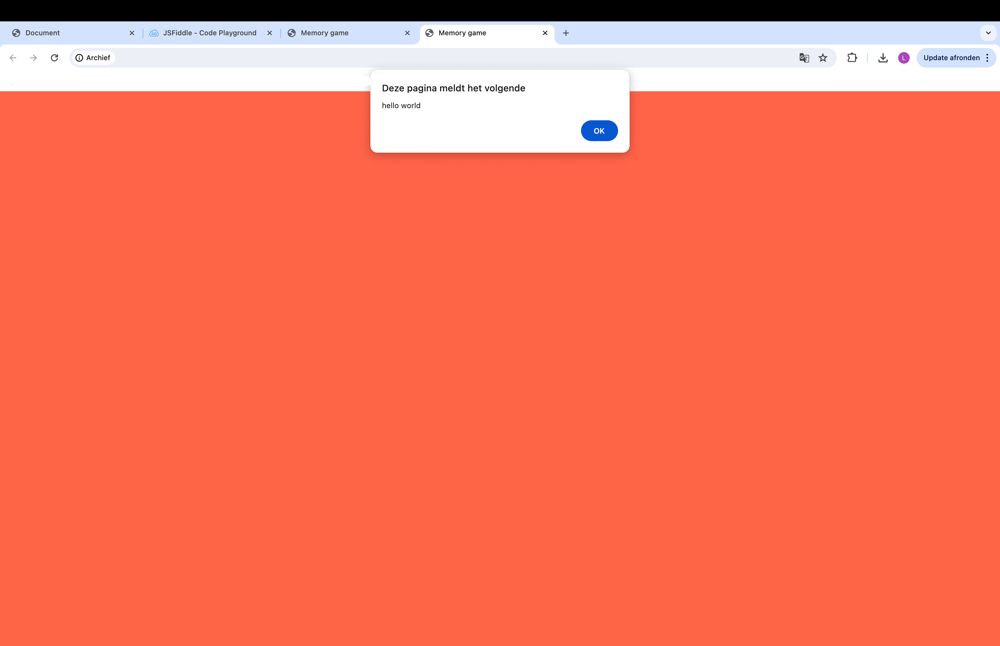

We gaan een mini game bouwen!
Je moet een set maken van twee dezelfde afbeeldingen, tot wanneer je alle sets hebt gevonden.
We gebruiken hiervoor de codetalen
- HTML
- CSS
- Javascript
Stap 1: mappenstructuur
Voor het maken van deze game gebruiken we de code-editor Studio Visual code
Download de bronnenbestanden en zet deze in een map naar keuze. Pak de zip-file uit.

open het bestand in Studio-Visual-Code
Dit is hoe je bestandsstructuur er moet uitzien.
Installeer de live server extensie via Visual Studio Code
Je start de live server op door op de knop Go live
Stap 2: HTML & CSS
Nu beginnen we aan het echte werk!
Kopieer de onderstaande code in je HTML-bestand
kopieer dit in je main.css-bestand
om te kijken of alles goed is gelinkt, laten we van kleur veranderen.
Bij background-color veranderen we blue naar tomato
Stap 3: Interactie met javascript
Javascript is al gelinkt voor jullie, maar toch leggen we nog eens uit hoe je dit linkt.
net voor de sluitingstag van de body schrijg je script en daar kies je script: scr
Om te testen of alles goed is gelinkt ga je naar app.js en zet je het volgende er in: alert('Hello world')
Je bekijkt dit in de browser en dan zou je dit moeten zien
Als dit is gelukt mag je de regel verwijderen
Kopieer deze code in het bestand met de naam app.js
eerst voegen we de foto's toe